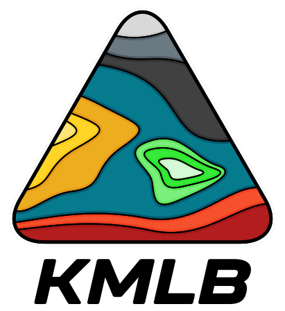

Google Earth KML Builder
KML w/out XML
Plain Python KML Builder
KMLB is a dependency-free Python library for writing Google Earth
KML files. Easily create points, lines, polygons, styles, and folders.
$
pip install kmlb
KMLB is free and open-source software released under the MIT License. You're free to use, modify, and distribute it. Citing is never required, but it's always appreciated. Even a quick mention helps others discover KMLB and shows where it's making a difference. © 2020–__KMLB_YEAR__ Henry F. Mros, III